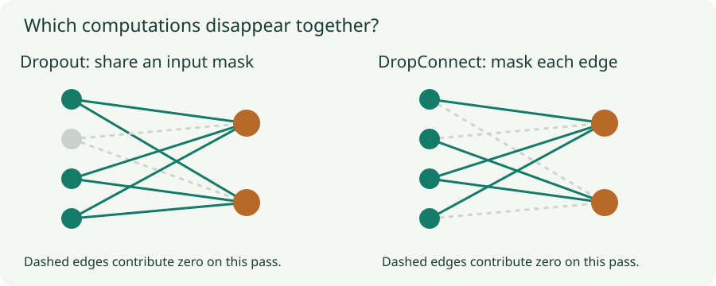

Dropout and DropConnect: Learn with Randomly Missing Paths
Derive inverted dropout’s $1/q$ scaling, prove its exact equivalence to feature-weighted L2 in linear regression, and compare Activation Dropout with DropConnect.
Dropout prevents hidden units from co-adapting by randomly zeroing out activations on each training pass. To keep expected activation magnitudes identical between training and evaluation without touching inference code, modern frameworks use inverted dropout.
1. Inverted dropout: why surviving activations divide by $q=1-p$
Let $p\in[0,1)$ be the drop probability and $q=1-p$ be the keep probability. For each activation $a$, draw a mask $m\sim\operatorname{Bernoulli}(q)$ ($\mathbb P(m=1)=q$, $\mathbb P(m=0)=p$). Inverted dropout outputs $\tilde a=\frac{m}{q}a$ during training and $a$ during evaluation:
- Expectation (unbiased mean):
$$\mathbb E_m[\tilde a]=q\left(\frac{a}{q}\right)+(1-q)(0)=a.$$
- Variance (mask noise): Since $m^2=m$, the second moment is $\mathbb E_m[\tilde a^2]=q\left(\frac{a}{q}\right)^2=\frac{a^2}{q}$. Subtracting $(\mathbb E_m[\tilde a])^2=a^2$ gives:
$$\operatorname{Var}_m(\tilde a)=\frac{a^2}{q}-a^2=\frac{1-q}{q}a^2=\frac{p}{q}a^2.$$
For $a=3$ and $p=0.25$ ($q=0.75$), $\tilde a$ is $0$ with probability $0.25$ and $3/0.75=4$ with probability $0.75$, giving $\mathbb E[\tilde a]=3$ and $\operatorname{Var}(\tilde a)=\frac{0.25}{0.75}(9)=3$.
2. Exact penalty in linear regression: feature-scaled L2
What objective does averaging over dropout masks actually minimize? Take a linear predictor $s=\sum_{j=1}^d w_ja_j$ with noisy prediction $\tilde s=\sum_{j=1}^d w_j\tilde a_j$ under independent masks $m_j\sim\operatorname{Bernoulli}(q)$. Since $\mathbb E_m[\tilde s]=s$ and independent masks have zero cross-covariance, expanding the expected squared loss around the mean $s$ gives:
In linear squared-error regression, inverted dropout with drop rate $p$ is mathematically identical in expectation to L2 ridge regression with penalty $\lambda_j=\frac{p}{1-p}a_j^2$, penalizing weights most heavily on high-energy features.

3. Activation Dropout vs. DropConnect: shared vs. independent noise
For a layer $z=Wa$, compare masking the input vector vs. masking the weight matrix with $q=1-p$:
- Activation Dropout: $\tilde z=W\left(\frac{m}{q}\odot a\right)$ with vector mask $m\in\{0,1\}^{n_{\rm in}}$. Because output rows $r$ and $s$ share the same dropped inputs $m_j$, their outputs co-vary across masks:
$$\operatorname{Cov}_m(\tilde z_r,\tilde z_s\mid a)=\sum_{j=1}^{n_{\rm in}}W_{rj}W_{sj}\operatorname{Var}_m(\tilde a_j)=\frac{p}{q}\sum_{j=1}^{n_{\rm in}}W_{rj}W_{sj}a_j^2.$$
- DropConnect: $\tilde z=\left(\frac{M}{q}\odot W\right)a$ with matrix mask $M_{rj}\stackrel{\text{i.i.d.}}{\sim}\operatorname{Bernoulli}(q)$. Each output row uses independent mask entries, so $\operatorname{Cov}_m(\tilde z_r,\tilde z_s\mid a)=0$ for $r\ne s$.
4. Lab: compare running means and output covariance
Shared activation masks versus independent edge masks
Inputs are $(1,2,-1,1)$. The two weight rows are $(1,0.5,-0.5,1)$ and $(0.5,1,0.5,-1)$. Their unmasked outputs are $3.5$ and $1$. The chart recomputes running means from 1,000 seeded mask draws; the readouts also compare theoretical and sampled covariance.
5. Implementation: training vs. evaluation mode
def inverted_dropout(a: torch.Tensor, p: float, training: bool) -> torch.Tensor:
if not training or p == 0.0:
return a
q = 1.0 - p
mask = (torch.rand_like(a) < q).to(a.dtype)
return a * mask / qAt evaluation (`model.eval()`), inverted dropout is the identity function. Only MC Dropout keeps dropout active at test time to average $K$ stochastic forward passes $\frac1K\sum_{k=1}^K f(x;m^{(k)})$ as an approximate ensemble.
6. Questions worth answering
So that $\mathbb E_m[\tilde a]=a$ during training, allowing evaluation (`model.eval()`) to use the unmasked network with no rescaling. The regularization comes from the variance $\frac{p}{1-p}a^2$ and prevented co-adaptation, not from shrinking activation means.
In Activation Dropout, dropping input $a_j$ removes $W_{rj}a_j$ and $W_{sj}a_j$ simultaneously from outputs $r$ and $s$, coupling them with covariance $\frac{p}{q}\sum_j W_{rj}W_{sj}a_j^2$. DropConnect samples independent masks $M_{rj}$ and $M_{sj}$ for each edge.
Sources
Srivastava et al., Dropout: A Simple Way to Prevent Neural Networks from Overfitting; Wan et al., Regularization of Neural Networks using DropConnect.